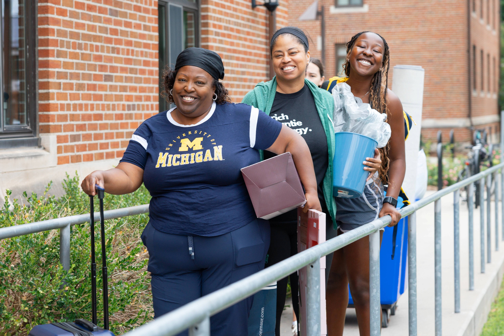
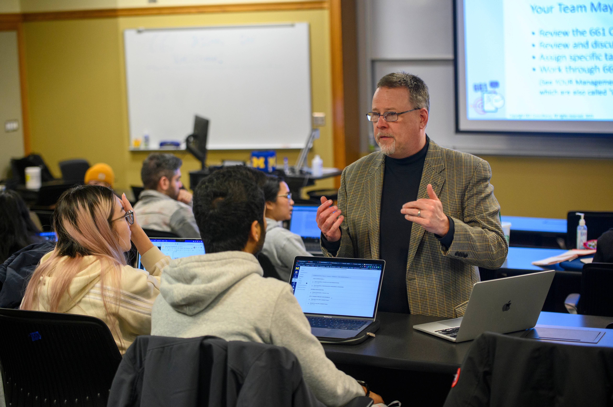

Build a Strategic Network Plan
Step 1: Find Alumni
- CDO Resources:
- Your Network:
- Personal Network:
Friends and Peers
- Your Professional Network:
Faculty, Supervisors, Mentors
- LinkedIn Search:
Search for people on LinkedIn


Step 2: Get a Response
- Writing Your LinkedIn Message to Get a Response
- Be (extra) concise - LinkedIn limits you to 300 characters
- Start with context that connects you
- Clearly state what you're looking for & why you're reaching out
- Say thank you
-
Write an Email to Get a Response
- Write a descriptive & enticing subject line
- Start with context that connects you
- Clearly state what you're looking for & why you're reaching out
- Say thank you